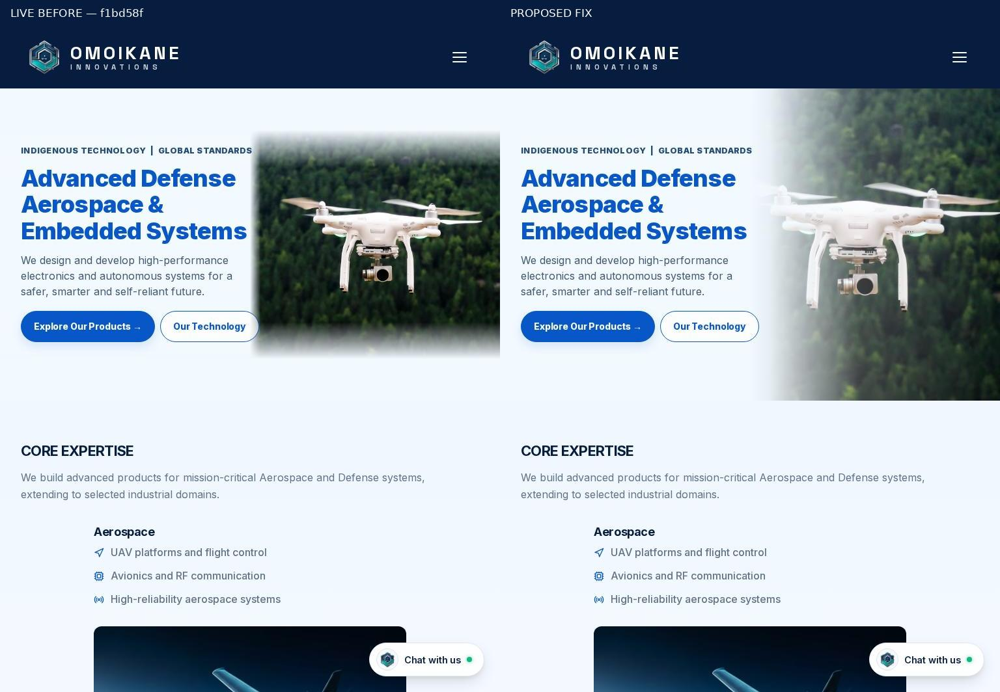
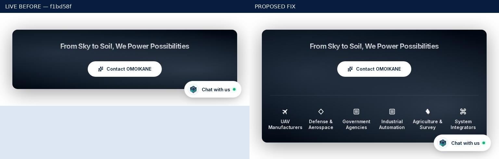
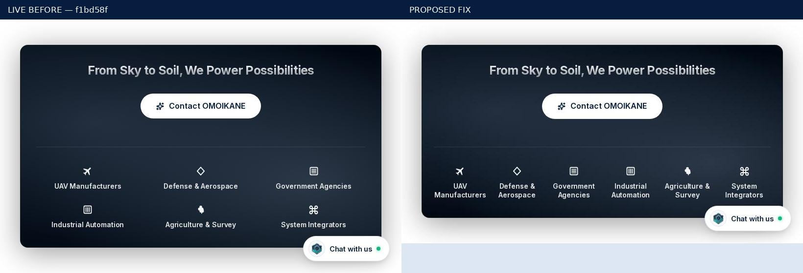
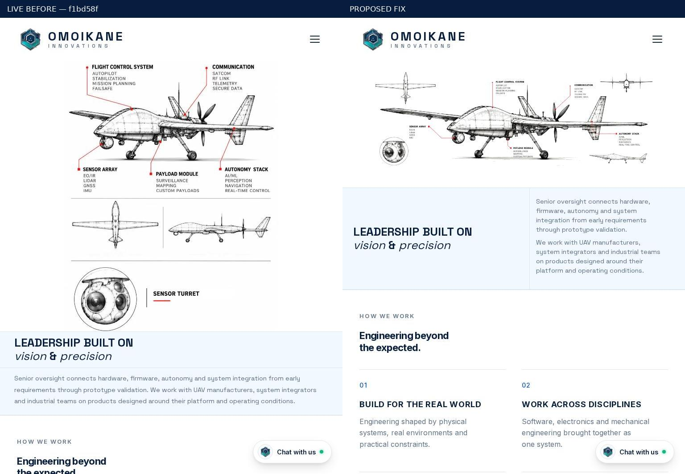
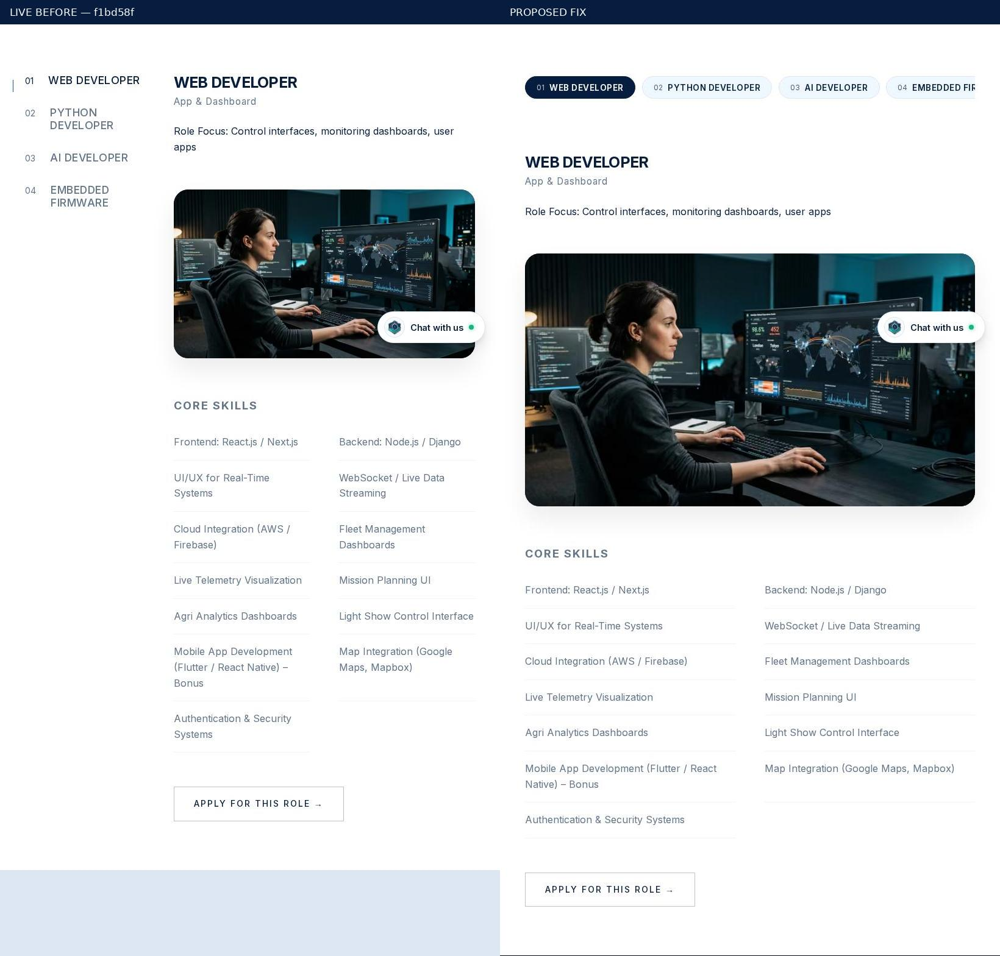
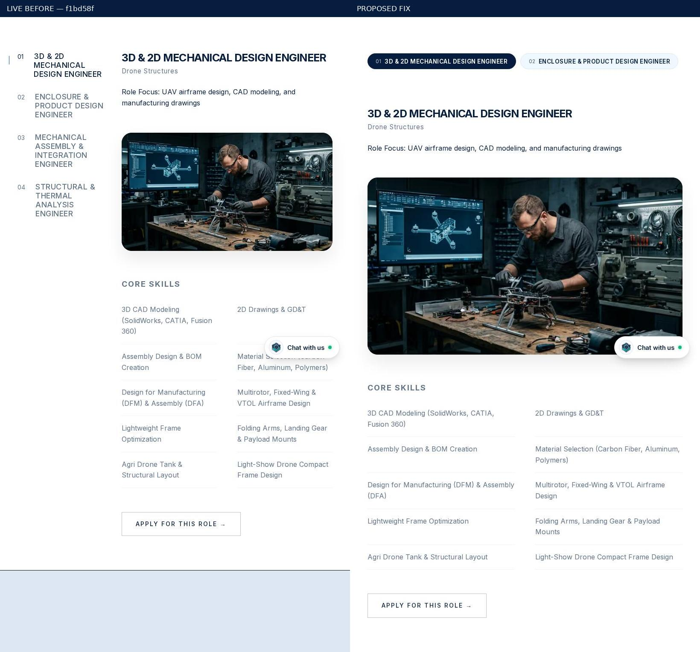
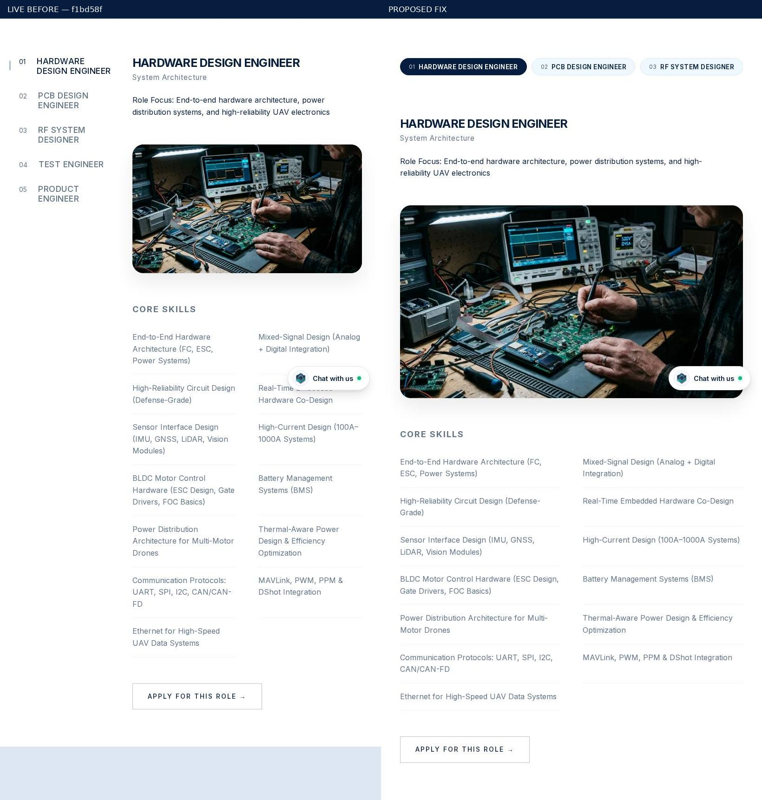
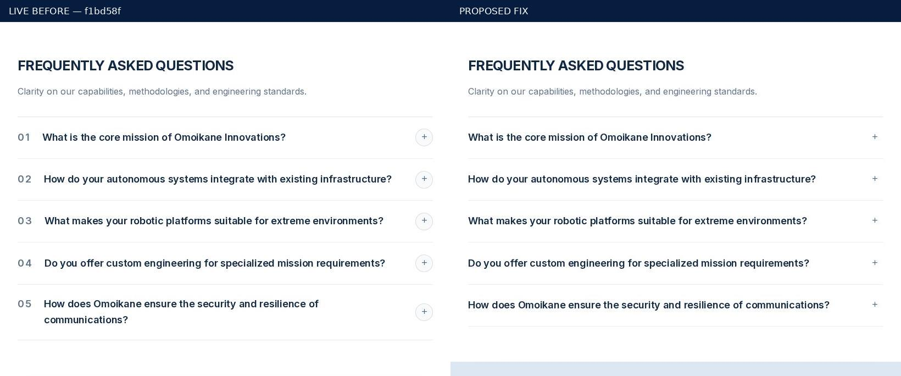

Requested tablet detailsRequested tablet details
Live before at left, proposed fix at right, at identical CSS widths. Grey below a shorter capture lies outside the component.
/ · 768px · hero

/about · 768px · cta

/about · 820px · cta

/leadership · 768px · hero

/careers/software · 820px · roles

/careers/mechanical · 820px · roles

/careers/electronics · 820px · roles

/about · 820px · faq
